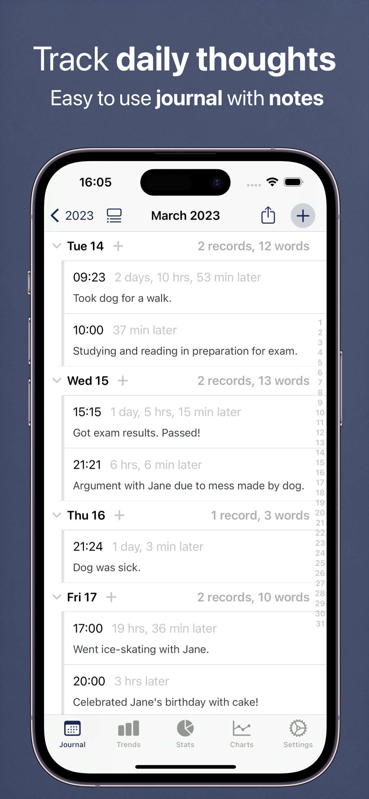
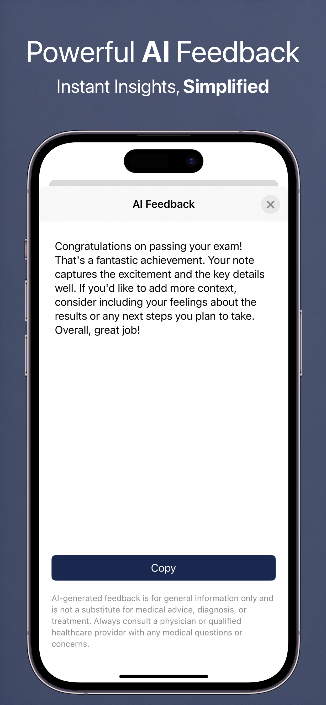
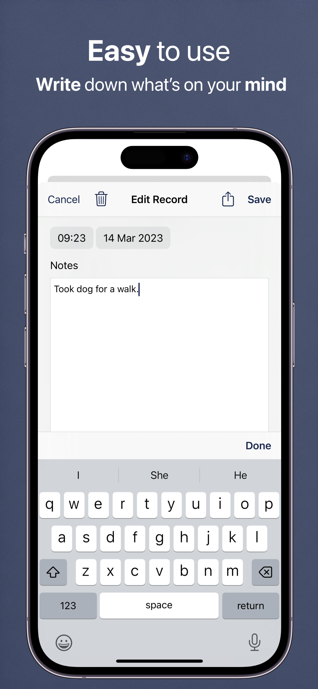

Your private space for daily reflections, thoughts, and memories. Write freely with AI-powered sentiment analysis, photo attachments, and intelligent insights into your writing patterns.
Free download • iPhone, iPad & Mac • iOS 16.0+
See Daily Journal in Action



Everything You Need for Mindful Journaling
✍️
Distraction-Free Writing
Clean, simple interface that puts your words first. No clutter, just you and your thoughts. Write as much or as little as you want each day.
😊
AI Sentiment Analysis
Automatic sentiment detection shows the emotional tone of your entries using Apple's on-device Natural Language API. Completely private - never leaves your device.
📊
Word Frequency Analysis
Discover what's really on your mind. See which words and themes appear most often in your writing to identify patterns and recurring thoughts.
📸
Photo Journals
Attach up to 8 photos per entry to capture memories visually. Perfect for travel journals, gratitude diaries, or simply documenting your day.
📋
Note Templates
Quick-start your entries with customizable templates. Perfect for gratitude journals, morning pages, goal tracking, or any recurring journaling practice.
🔍
Powerful Search
Find any entry instantly with full-text search. Your journals are also indexed in iOS Spotlight for quick access from anywhere on your device.
Simple, Powerful Journaling
1. Write Your Thoughts
Open the app and start writing. No setup required. Add photos, use templates, or just free-write whatever comes to mind.
2. See Patterns Emerge
The app automatically analyzes sentiment and word frequency. Discover themes and patterns in your thoughts over time without any extra effort.
3. Reflect and Grow
Review past entries, see how your mood and focus have evolved, and gain insights into your personal growth journey.
4. Keep Everything Safe
Your entries automatically sync via iCloud and are backed up weekly. Switch between devices seamlessly or restore old entries anytime.
Why Keep a Daily Journal?
Research shows journaling improves mental health, clarity, and creativity
🧠 Mental Clarity
Writing helps organize thoughts and reduce mental clutter
💭 Emotional Processing
Express and process feelings in a safe, private space
🎯 Track Progress
See how far you've come by reviewing past entries
💡 Self-Discovery
Uncover patterns in your thinking and behavior
🙏 Gratitude Practice
Cultivate thankfulness with daily gratitude journaling
📚 Preserve Memories
Create a personal archive of your life's moments
Perfect For...
Daily Reflection
End each day by writing about what happened, what you learned, and how you felt. Build a consistent journaling habit with reminders and templates.
Gratitude Journaling
Use note templates to quickly log three things you're grateful for each day. Track your gratitude practice and see positive patterns emerge.
Travel Journals
Document your adventures with photos and detailed notes. Create a rich record of your travels that you can revisit anytime.
Goal Tracking
Write about your goals, track your progress, and reflect on what's working. Use AI insights to see which approaches are most effective.
Creative Writing
Practice daily writing, capture ideas, and develop your voice. The distraction-free interface helps you focus on your craft.
Mental Health
Process emotions, identify triggers, and track mood patterns through writing. Sentiment analysis provides objective feedback on emotional tone.
Frequently Asked Questions
Is my journal private?
Absolutely. Your entries are stored encrypted on your device and in your private iCloud account. We never see your writing. Even the AI sentiment analysis happens entirely on your device using Apple's Natural Language API - your words never leave your phone.
How does sentiment analysis work?
When you write 8 or more words, the app uses Apple's built-in Natural Language framework to analyze the emotional tone. An emoji appears to show whether the entry reads as positive, negative, or neutral. This happens entirely on-device for complete privacy.
What is word frequency analysis?
The Trends feature analyzes all your entries to show which words and topics you write about most often. This helps you identify recurring themes, concerns, or interests in your thinking.
Can I add photos to my journal?
Yes! You can attach up to 8 photos to each journal entry. Photos are stored efficiently with automatic thumbnail generation, and they sync across all your devices via iCloud.
What are note templates?
Templates are pre-written prompts that help you start writing quickly. Create custom templates for things like gratitude lists, daily reviews, goal tracking, or any other recurring format you use.
Can I export my journal entries?
Yes. You can export your entries as PDF, Excel, or JSON files. This lets you create backups, share selected entries, or move your data to other platforms if needed.
Does it work on Mac?
Yes! The app runs natively on Apple Silicon Macs (M1 and later). Your entries sync automatically between your iPhone, iPad, and Mac via iCloud.
Can I write multiple entries per day?
Absolutely. Write as many entries as you want each day. Some people journal in the morning and evening, while others add notes throughout the day.
What Users Are Saying
Real reviews from the App Store
So far so good
⭐⭐⭐⭐⭐
"This is a nice little simple app that does not overextend into unneeded areas. It is the simplicity of it, including the simplicity of the interface that I value more than anything. I don't need flowers and squirrels and games and peekaboo things and rainbow unicorns. I just need a simple diary-like note app. So far this app has fulfilled those requirements or lack of requirements. It's sort of refreshing. I also appreciate that you can export it in PDF form when there is a need to do so. Thank you for keeping it simple."
- PRE'
Freedom
⭐⭐⭐⭐⭐
"Freedom the snow and how to manage your time"
- 223tr
Nice app
⭐⭐⭐⭐
"Overall I like this app very much. It it does exactly what I want. I don't like that it keeps telling me when I last had an entry. I couldn't get this function to stay off."
- Swimmer-Bear
Just Got App
⭐⭐⭐⭐
"So far the app is easy to use. I've been able to add multiple notes to each day. I like it, but have not had it long enough to give 5 stars yet."
- Leigh Bohrman
Josh
⭐⭐⭐
"Wish there was an option to attach files and photos to entries"
- Levee maker
Start Your Journaling Practice Today
Join thousands discovering the benefits of daily reflection